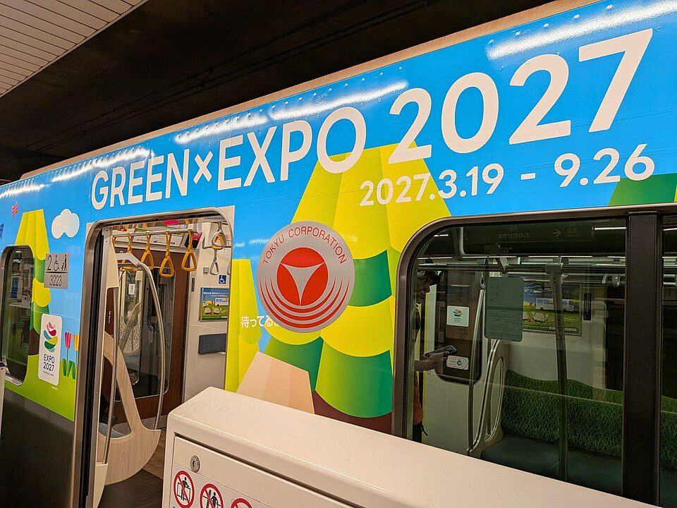
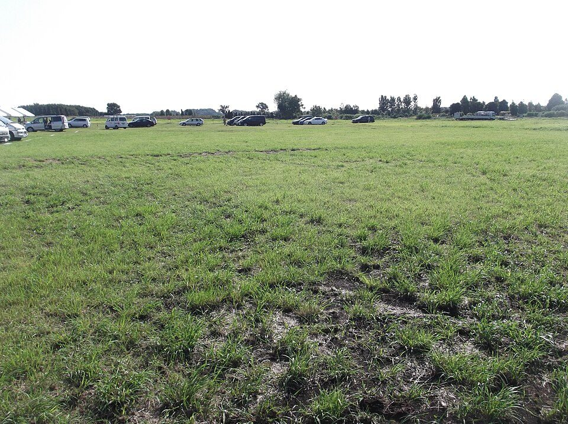
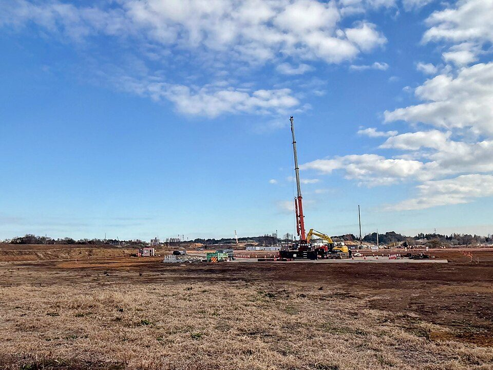
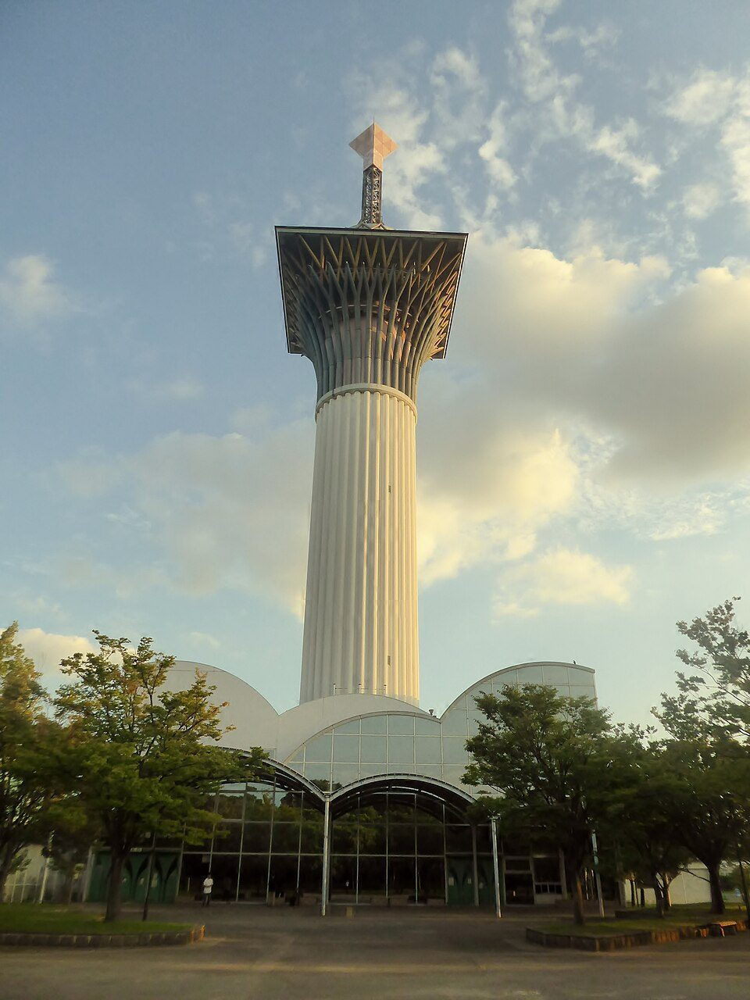

GREEN×EXPO 2027ガイド：会期、チケットの値段、3つの予約、会場への行き方（横浜の国際園芸博覧会）
要点まとめ
GREEN×EXPO 2027は、2027年に横浜市で開かれる国際園芸博覧会です[1]。開幕まで約4か月の今、チケットの販売と来場日時の予約はすでに始まっています[8]。この記事では、行くかどうかを考えている人に向けて、会期・値段・予約・行き方を整理し、まだ決まっていないことも分けて書きました。根拠は、主催する2027年国際園芸博覧会協会と、国土交通省・横浜市の資料です。

どんな博覧会か
| 正式名称 | 2027年国際園芸博覧会。通称は「横浜グリーンエクスポ」[1] |
|---|---|
| 会期 | 2027年3月19日（金）〜9月26日（日）、192日間[1][2] |
| 開場時間 | 9時30分〜21時30分[9] |
| 会場 | 横浜市旭区・瀬谷区の旧上瀬谷通信施設の一部（約100ha。うち会場区域80ha）[10][1] |
| テーマ | 幸せを創る明日の風景[1] |
| 区分 | A1（最上位）クラス。国際園芸家協会（AIPH）の承認と、博覧会国際事務局（BIE）の認定を受けている[1] |
| 来場の目標 | 有料来場者数1,000万人以上[1] |
| 主催 | 公益社団法人2027年国際園芸博覧会協会[2] |
日本でA1クラスは、1990年の大阪以来
A1クラスの国際園芸博覧会は、1990年の大阪以来
日本でA1クラスの国際園芸博覧会が開かれるのは、1990年に大阪市で開かれた国際花と緑の博覧会（花の万博）以来です[2]。会場の旧上瀬谷通信施設は、2015年に米軍から返還された約242haの土地で、その一部を使います[1]。横浜駅から20km圏内、東京駅から40km圏内の場所です[10]。

参加する国と国際機関は約70
2026年8月の一覧で、71か国と5つの国際機関
博覧会協会は2026年8月に、参加する国・国際機関の数が目標の約70に届いたと発表しました[11]。8月4日版の一覧には、71か国と5つの国際機関が載っています（公表できるものだけの数）[12]。その後の更新は、調査日の時点では確認できていません。
何が見られるか
1000万株の花と緑。開幕のころは桜
会期のはじめには、約40種600本の桜が咲く
博覧会協会は「1000万株の花や緑」が会場を彩るとし、会期のはじめには約40種600本の桜が咲くと案内しています[13]。会場には、テーマごとに5つの「Village」があります[14]。
| 名前 | テーマ |
|---|---|
| Urban GX Village | 脱炭素の社会にGX（グリーントランスフォーメーション）で挑む |
| Craft Village | 自然とのつながりの中で育まれた知恵・技術と出会う |
| Farm & Food Village | 農と食を通じて、心身の豊かさを追求する |
| SATOYAMA Village | 自然と人、人と人が関わりあい、共に生きる |
| Kids Village | 子どもたちが自然と世界を学ぶ |
出典: [14]（テーマは原文を短くしたもの）。
主な施設と出展
テーマ館や日本政府苑は、入場券のほかにお金がかからない
博覧会協会の施設として、テーマ館「ねっこ」と園芸文化館「いろはにわ」があり、国の「日本政府苑」も出展します[13]。開催地からは、横浜市の「つなぐ横浜館」「つなぐ横浜フィールド」と、神奈川県の「Vibrant INOCHI Forest かながわ館」が出展します[15][16]。花・緑の出展、テーマ館、園芸文化館、日本政府苑は、入場チケットのほかに観覧の料金はかかりません（物販などは別）[7]。
チケットの種類と値段
| 券種 | 大人 | 中人 | 小人 |
|---|---|---|---|
| 1日券（早割。2027年3月18日まで） | 4,900円 | 3,000円 | 1,400円 |
| 1日券（通常。2027年3月19日から） | 5,500円 | 3,300円 | 1,500円 |
| 夜間券（会期中だけ販売。17時以降に1回） | 3,500円 | 1,900円 | 900円 |
| 夏パス（7月1日〜8月31日は何度でも） | 12,000円 | 7,000円 | 3,000円 |
| 通期パス（会期中は何度でも） | 28,000円 | 16,000円 | 6,500円 |
| 特別割引券（障がい者手帳などを持つ人と同伴者1名） | 2,800円 | 1,700円 | 800円 |
出典: [3]。税込の表記は横浜市の広報紙による[4]。大人は18歳以上、中人は12〜17歳、小人は4〜11歳で、3歳以下は無料です（チケットなしで入れる）[3]。
1日券は、開幕前に買うと安い
大人1日券は、開幕前の早割なら600円安い
買える場所と払い方
公式サイトのほか、コンビニ3社でも買える
公式のチケットサイトで買う場合は、アカウントの登録が必要です[7]。支払いは、クレジットカードか、国内のコンビニでの支払いです[7]。2026年9月18日からは、セブン‐イレブン・ファミリーマート・ローソンでも、来場日時の予約が付いた入場チケットを売っています[17][8]。
売れたチケットは約290万枚
2026年10月18日時点で2,899,344枚
出典: [18][19][20][21][22]。10月18日時点の内訳は、早割の1日券が2,860,447枚、通期パスが25,131枚、特別割引券が13,065枚、夏パスが701枚です[22]。6月から7月の1か月で約172万枚増えていますが、その理由は博覧会協会のお知らせには書かれていません[18][19]。
入場までの3つの予約
- 2026年3月19日
前売りのチケットの販売が始まった
早割の1日券・特別割引券・夏パス・通期パス[3]
- 2026年9月18日
来場日時・シャトルバス・駐車場の予約が始まった
- 2027年3月18日
早割の1日券の販売が終わる
- 2027年3月19日
開幕。通常価格の1日券と夜間券の販売が始まる
- 2027年7月1日〜8月31日
夏パスで何度でも入れる期間
- 2027年9月26日
閉幕
来場日時の予約は、入る時間帯を選ぶ
9:30から14:30までの1時間ごとと、17:00の枠
予約できる時間帯は、9:30・10:30・11:30・12:30・13:30・14:30・17:00で、17:00の枠は夜間券でも予約できます[9]。予約した時刻より後なら入場できます[7]。1日券などの予約の変更は3回まで、通期パスは何回でも変えられます[8][7]。
一部の展示は、当日に「観覧予約」をする
観覧予約は当日だけ。8:00・11:30・16:30に枠が開く
会場の一部の展示には、来場した当日だけ予約できる観覧予約があります[9]。予約の枠は8:00・11:30・16:30の3回に分けて開放されます[9]。どの施設が対象になるかは、調査日の時点では検討中です[7]。
会場への行き方
電車なら、4駅からのシャトルバス
瀬谷・三ツ境・十日市場・南町田グランベリーパークの4駅
車なら、会場の駐車場かパーク＆ライド
会場の駐車場は、平日5,000円・土休日7,000円
| 方法 | 料金 | 実施する日 |
|---|---|---|
| 会場の駐車場（北・西の2か所） | 平日5,000円、土休日7,000円 | 会期中 |
| パーク＆ライド | 3,000円 | 混雑する19日間だけ |
出典: [6]。どちらも事前の予約制です[6]。パーク＆ライドは、イオンモール大和・イトーヨーカドー大和鶴間店・相模大野立体駐車場に車を停めて、シャトルバスで会場へ向かう方法です[6]。
横浜駅や羽田空港からの直行バスは、まだ調整中
運行予定だが、運賃・時刻・予約方法は調整中
横浜駅・新横浜駅・羽田空港・横浜の都心臨海部から会場への直行バスは「運行予定」とされていますが、運行する会社・時刻・運賃・予約の方法は調整中です[6]。
新しい鉄道「上瀬谷ライン」は、実現しなかった
鉄道の代わりに、バス専用道の整備に方針を変えた
- 2021年11月
運行会社の候補が参加を見送った
横浜市は新交通システムを検討し、横浜シーサイドラインに検討を頼んでいたが、「現時点で参画はしない」と回答された[24]
- 2024年1月
「新たな交通整備事業」の方針を決めた
瀬谷駅からのバス専用道（延長約2.7km）を整備する計画[25]
- 2024年3月27日
上瀬谷ラインの環境影響評価の手続きを廃止
このバス専用道が博覧会の期間中に使えるかどうかは、調べた範囲の資料では確かめられませんでした。会期中の公共交通は、4駅のシャトルバスと直行バスが中心です[6]。

持ち物と、まだ決まっていないこと
入口で手荷物検査。持ち込めないものがある
お酒、瓶・缶の飲み物、スーツケースは持ち込めない
入場ゲートでは、来場者と持ち物の検査があります[27]。お酒（開けていないものも含む）、瓶や缶の飲み物、スーツケースやキャリーケース、カメラの三脚・一脚、手のひらに収まらない自撮り棒などは持ち込めません[27]。ペットボトルは持ち込めます[27]。
調査日（2026年11月9日）の時点で、まだ決まっていないこと
建設費・運営費と、過去の博覧会との比較
会場の建設費は最大417億円
国・地方公共団体・民間が、139億円ずつ負担する
運営費は536億円に増えた
運営費の見通しは、それまでの1.49倍の536億円
物価の上昇、計画の具体化、費用を抑える対策を反映した見通しです[29]。収入は、536億円のうち418億円（78%）を入場料で見込んでいます[29]。
1990年の花の万博は、2,313万人が入場した
目標は有料来場者数なので、総入場者数とは比べにくい
1990年の花の万博は、183日間で23,126,934人が入場しました[30]。2025年の大阪・関西万博は、累計の来場者が29,017,924人で、うち関係者の入場証（AD証）による入場が3,438,938人でした[31]。差し引くと約2,558万人です。GREEN×EXPO 2027の目標は、有料来場者で1,000万人以上です[1]。

今回確認できなかった点
- 2026年9月以降の参加国・国際機関の数（外務省の一覧を読めなかった）
- シャトルバスの駅ごとの所要時間と本数
- シャトルバスと駐車場の料金が税込かどうか（記載がない）
- ベビーカー・車いすの貸し出し、Wi-Fi、暑さ対策の具体的な内容
- 会場全体の工事の進み具合
- チケットの販売が6月から7月に大きく増えた理由
関連する記事
出典（31件）
閲覧日はいずれも2026年11月9日
- 開催概要（2027年国際園芸博覧会協会）
- GREEN×EXPO 2027への取組状況及び協力のお願い（関係府省庁連絡会議 資料1、2025年10月15日）（国土交通省・農林水産省）
- GREEN×EXPO 2027 入場チケット制度（第3版、2026年9月18日更新）（2027年国際園芸博覧会協会）
- 広報よこはま 2026年2月号「開催まであと1年」（横浜市）
- チケットインフォメーション（2027年国際園芸博覧会協会）
- 会場への交通アクセス（2027年国際園芸博覧会協会）
- よくあるご質問（2027年国際園芸博覧会協会）
- 入場チケット及び4駅シャトルバス・駐車場の日時予約開始日が決定（2026年7月17日）（2027年国際園芸博覧会協会）
- 来場日時予約の詳細および観覧予約の導入について（2026年8月27日）（2027年国際園芸博覧会協会）
- GREEN×EXPO 2027の取組状況等について（推進本部 資料1）（国土交通省）
- The number of official participants has reached the goal（英語のお知らせ、2026年8月5日）（2027年国際園芸博覧会協会）
- Confirmed Participants（2026年8月4日版）（2027年国際園芸博覧会協会）
- 公式ウェブサイト トップページ（2027年国際園芸博覧会協会）
- GREEN×EXPO 2027の取組について（国土交通省）
- 横浜グリーンエクスポ開催半年前メディア発表会（記者発表、2026年9月29日）（横浜市）
- 開催地（横浜市、神奈川県）（2027年国際園芸博覧会協会）
- 全国のコンビニエンスストアで入場チケットを販売開始（2026年9月2日）（2027年国際園芸博覧会協会）
- 入場チケットの販売状況について（2026年6月18日時点）（2027年国際園芸博覧会協会）
- 入場チケットの販売状況について（2026年7月18日時点）（2027年国際園芸博覧会協会）
- 入場チケットの販売状況について（2026年8月18日時点）（2027年国際園芸博覧会協会）
- 入場チケットの販売状況について（2026年9月18日時点）（2027年国際園芸博覧会協会）
- 入場チケットの販売状況について（2026年10月18日時点）（2027年国際園芸博覧会協会）
- 広報よこはま 2026年10月号「開幕まであと半年！」（横浜市）
- 旧上瀬谷通信施設地区土地区画整理事業 公共事業事前評価調書（案）への市民意見と市の見解（2022年10月）（横浜市）
- 新たな交通整備事業 事業説明会資料（瀬谷バス専用道線、2026年）（横浜市）
- （仮称）都市高速鉄道上瀬谷ライン整備事業 環境影響評価手続（横浜市）
- 来場者向け 持込禁止物・禁止行為等に関する規約（2027年国際園芸博覧会協会）
- キャッシュレス決済システムプロジェクト 協賛募集概要（2025年11月）（2027年国際園芸博覧会協会）
- 第32回理事会 資料（運営費の見直し、2025年12月）（2027年国際園芸博覧会協会）
- Basic Information of Expo '90（国際花と緑の博覧会記念協会）
- 【更新】来場者数と入場チケット販売数について（2025年10月14日）（2025年日本国際博覧会協会）
写真・画像の出典（4件）
- 会期を描いたラッピング電車
写真: ジョジョの珍妙な冒険／Wikimedia Commons（CC0） - 米軍の上瀬谷通信施設があった土地の草地
写真: Ootahara／Wikimedia Commons（CC0） - 2025年12月の会場の工事のようす
写真: Japanbird／Wikimedia Commons（CC0） - 鶴見緑地に残る展望塔
写真: Tokumeigakarinoaoshima／Wikimedia Commons（CC BY-SA 4.0）